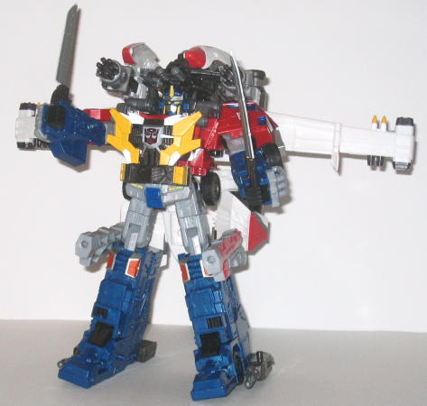

Wing Saber's alternate
mode is a futuristic aircraft, albeit not nearly as futuristic as his
Energon
version
-- it still bears the same general features of modern aircraft,
only with a LOT more weaponry. And therein lies one of Wing Saber's chief
draws-- he's got LOADS of weapons. He's got one firing missile launcher
on the end of each wing, and two non-firing missile launchers on each wing
with four missiles molded into each. He's got machine guns on the bottom
of the inner wings. He's got two more molded-in, non-firing guns on the
bottom side of each wing. He's got two machine guns on the underside of
the cockpit. AND, if you insert his Cyber Key into the slot behind the
cockpit, the entire nosecone splits open to reveal a HUGE (non-firing)
gun! Press the button on the top of the assembly to have part of the gun
light up red while a rapid-firing noise is emitted. He's also got four
Powerlinx ports if you want to add Minicons for even more power-- two are
on the sides of the nosecone, while two more are on the undersides of the
wings (though they're more accessible in robot mode than vehicle mode).
Wing Saber's color scheme of white, dark gray, and a bit of red and yellow
isn't exactly the more eye-catching combination, but it's a very Autobot-y
combination, and the colors certainly don't clash with each other, so it's
servicable. Wing Saber's mold and paint detailing are also pretty qdequate,
though a little more mold detailing near the back end of the vehicle mode
would have been appreciated. In vehicle mode, however, is where Wing Saber's
main flaw shows through-- it's pretty obvious where most of his robot parts
are, as he's got quite a bit of undercarriage junk. The robot chest plate
is the most obvious, as it's only the teeniest bit off the ground, though
the wing machine guns also stick out a bit too low, and it's pretty obvious
where the upper legs of the robot mode are, in front of the rear engines.
(Another, more minor, quibble is that the small tabs that are supposed
to keep the rear engine turbines attached to the rear end of the plane
don't work very well-- however, even if they do come undone, the joints
are sturdy enough to hold the engine turbines up easily by themselves.)
And, though I realize it's partially due to the rather cool Cyber Key gimmick,
the nosecone of the plane is also a bit oversized.
Wing Saber's robot mode
is pretty nice, but because of the Sonic Wing Mode, it does suffer from
a few problems as well. For one, the gap between the robot head and the
chestplate is just a bit too big for my liking. The arms also can't move
forward at the shoulders unless you partially unhinge them from the wings,
and that just looks a little weird, given that they're not visibly attached
to Wing Saber's main robot body in the first place (they're attached to
the wings instead). However, those two quibbles aside, this is a nice robot
mode. Wing Saber's still got all the weaponry from his vehicle mode (his
nosecone-gun can be folded over his head into a firing position if so desired,
but is otherwise on his back), and then some. The back end of the wings
can be detached and plugged into two of his guns, which in turn can be
detached and attached to the sides of Wing Saber's arms-- so now, in addition
to all that firepower, Wing Saber now lives up to his name as well with
some slashin' swords! His hands are actually gun-fingers in this mode like
Armada Demolishor
, which is cool-- and it's
even cooler when you find that there's tabs on the insides of the arms
that pull some of the gun nozzles part or all the way into the lower arms
so that Wing Saber's hands look more like... well, hands. Other nice design
touches are his head, which looks an awful lot like a young Cybertron Prime's
(which is certainly appropriate, given his main gimmick), and that his
wings can fold out to almost twice their original wingspan to look more
impressive. The engine turbines also make nice kneecaps, and it was pretty
creative on how the designers turned the rear wings into feet. Wing Saber's
articulation is also pretty good, with articulation at the head, hips (at
three points), waist, knees, shoulders (at two points), and elbows (at
two points). However, it should be noted that with his large nosecone-gun
on his back, Wing Saber is slightly backheavy, so even though he has large,
flat feet, you have to lean him forward a bit if you want to get him to
stand by himself easily.

Wing Saber can combine
with the core robot
Optimus Prime
+ Prime's
leg add-ons to form the awesome Sonic Wing Mode. And boy, I tell ya, this
is definitely the highlight of Wing Saber, and what edges him into the
"must-buy" category.
Leobreaker's Savage Claw
Mode
is NOTHING compared to this. There is a bit of Wing Saber's robot
leg baggage in the back of this mode, but it stays out of the way, and
that's the ONLY thing wrong with this otherwise flawless combination. Prime
is now super-pumped and ready for battle-- he's got Wing Saber's arm-guns
over his shoulders, wings off to the sides with Wing Saber's missile launchers,
firing missile launchers attached to his feet, dual swords to wield (and
yes, they fit into his fists very well), Wing Saber's nifty-looking chest
plate to fit over his own, and last but not least, Wing Saber's big cockpit-gun
that can swing up over his head. So yeah, Prime can DEFINITELY take out
anything short of Unicron that comes his way. Everything fits together
very well in this form, so no worries about parts falling off at the drop
of a hat, and he doesn't have any balance issues either. Excellente!
Wing Saber's vehicle
mode may have a bit too much baggage on the underside, but he more than
makes up for this flaw with lots of weaponry, a cool Cyber Key gimmick,
a pretty nice robot mode, and an absolutely AMAZING Sonic Wing Mode. Highly
recommended, and worth every penny, especially if you buy him in the upcoming
bargain Optimus Prime/Wing Saber 2-pack Costco exclusive for $35. (Both
toys are unchanged from their mass releases.)
Review by Beastbot